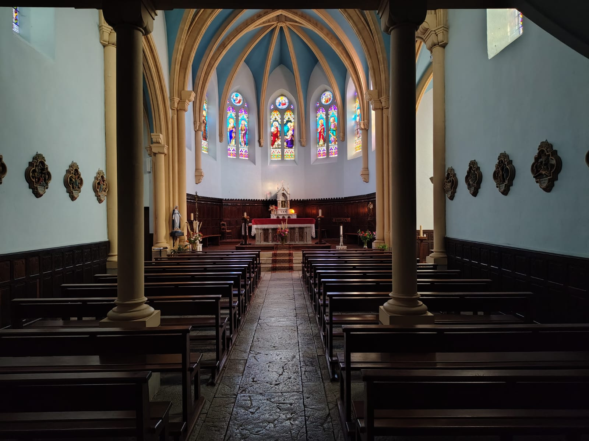

Pour la première édition de FEDEZ IBIL, nous vous proposons un pèlerinage en Basse-Navarre (jusqu’à Saint-Jean-Pied-de-Port) sur le thème de la dévotion au Sacré-Cœur de Jésus. Il se déroulera de la manière suivante :
Samedi 17 octobre
- Samedi matin, le point de rendez-vous est fixé à 10 h sur le parking du Jai Alai de Saint-Jean-Pied-de-Port. Il y a des places de stationnement gratuit alentour.
- Les sacs et tentes pour le bivouac seront chargés dans une camionnette que l’on retrouvera sur le lieu de bivouac en fin d’après-midi.
- Des bus nous emmèneront au lieu de départ du pèlerinage, où nous aurons la messe.
- Munis d’un carnet de chants complet, petit sac sur le dos, nous parcourrons 15 km sur les sentiers de Compostelle. À l’arrivée, après une veillée, nous passerons la nuit sous tente.
Dimanche 18 octobre
- Le dimanche, nous reprendrons notre pèlerinage, parcourrons environ la même distance et terminerons avec la messe dominicale à Saint-Jean-Pied-de-Port en début d’après-midi. Le pèlerinage prendra fin à 17 heures.
